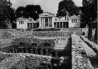
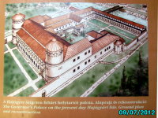
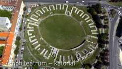
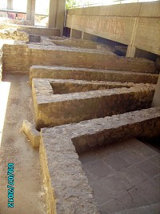
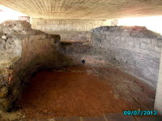
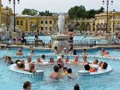

|
|
|
|
|
|
|
| BEST OF BUDAPEST |
| |

|
| |
| Das Beste im Sommer |
| |
|
|
| |
| vornehm und elegant |
| |
|
|
| |
| Türkische
Heilbäder |
| |
|
|
|
|
|
|
|
|
| |
| weitere Heilbäder |
| |
|
|
|
|
|
|
|
|
| |
| Heilbäder in
Hotels |
| |
|
|
|
|
|
|
| |
| Strandbäder |
| |
|
|
|
|
|
|
|
|
|
|
|
|
| |
| Kur und Wellness |
| |
|
|
|
|
| |
| |
|
|
| |
| |
|
|
Budapest - Die Hauptstadt
der Thermalquellen |
| |
In
keinem
anderen Land und in keiner
anderen Großstadt der Welt gibt es so viele Thermal- und
Heilquellen,
wie in Ungarn (über 800) und in Budapest (118). Bis
zu 78°C heißes
Thermalwasser sprudelt
in
Budapest aus der Tiefe, 70 Millionen Liter am Tag. Allein in der
Hauptstadt Budapest gibt es rd. 50
öffentliche
Heilbäder, etwa 20 davon
sind für ausländische Gäste interessant,
diese findet der Leser im Menü links auf dieser
Seite.
|
Die meisten der
Budapester Thermalbäder bieten medizinische
Behandlungen an, die für Kurreisende aus dem deutschsprachigen
Raum auch aus Kostengründen von großem
Interesse ist.
Budapest
zählt
nicht nur zu den schönsten Städten der Welt.
Die Hauptstadt der Magyaren ist wohl auch die Welthauptstadt der
heißen Heil-
und Thermalquellen und auch schon deswegen einen Besuch wert.
|
|
 |
Die
besondere geologische Beschaffenheit des Karpatenbeckens
mit Mineralien und Spurenelementen verleiht dem Wasser Heilkraft.
Bereits
die Kelten nutzten diese Gabe der Natur vor rd. 3.000 Jahren, ihre
Bäder wurden
jedoch von den Römern für die Versorgung der
Garnisonsbäder umgebaut. Relikte
keltischen Ursprungs findet man im Aquincum Museum im
Zentrum der Ruinenstadt
Aquincum im Nordwesten von Budapest. |
|
 |
Aquincum
war rd. vier Jahrhunderte lang die Hauptstadt der
römischen Provinz Pannonien und hatte in ihrer Glanzzeit bis
zu 60.000
Einwohner. Das Bild links zeigt eine Rekonstruktion des
Guverneurpalastes. Im Römisches
Bad Museum (rechts) sieht
man die Relikte des antiken
Thermalbades Thermae
Maiores, das im
Zentrum der
Bürgerstadt Aquincum den Angehörigen der
Legionssoldaten diente. |
|
|
 |
Legionssoldaten
und weitere
Militärangehörige lebten hier mit ihren
Familien in den ersten vier Jahrhunderten nach Christi
Geburt.
Bild
rechts: Römische Siedlungsreste.
Bild links:
Reste des für die Unterhaltung der Soldaten errichteten
Amphiteaters im heutigen Stadtteil Óbuda. |
|
|
Ein
Meisterwerk der antiken Architektur stellt das einstige
Thermalbad dar, eine bewundernswerte Konstruktion von
unzähligen Badebecken (Bild links) und
Massageräumen (Bild rechts) nebeneinandergereiht. Man wird um
rd.
zwei
Jahrtausende
zurückversetzt in diesem Bädermuseum im Budapester
Stadtteil Óbuda unter den
westlichen Ausläufern der
Donaubrücke Árpád. |
 |
|
Wen
wundert
es heute, wenn
nach nahezu zwei Jahrtausenden kriegerischer Auseinandeersetzungen,
Völkerschlachten keine Reste mehr von den
wunderbaren Mosaiken übrigblieb, die einst die Baderäume und
-becken in den Thermae Maiores zierten. In der
-
die heute ein
Museum ist - sind noch so manche Mosaiken aus damaligen Zeiten
zu bewundern. |
 |
|
Die Heilkraft des Wassers ist
ein wertvoller Bodenschatz, ein wichtiger touristischer Faktor
für Ungarn, zumal das
Gesundheitsbewusstsein und der Wellnessbedarf der Menschen
ständig
zunimmt.
|
|
|
 |
Zwei Badeanstalten der
Extraklasse ragen aus der großen
Vielfalt öffentlicher
und privater Thermalbäder hervor und sind völlig zu
Recht weltberühmt geworden:
links:
und
rechts:
|
 |
| |
Das im
gleichnamigen Hotel Gellert ist ein Jugendstiljuwel, das Anfang des 19.
Jahrhunderts
erbaut
wurde. In seinem Gedeihenreichtum einzigartig, gilt es als
schönstes Thermalbad
Budapests.
Es befindet sich im
Vier-Sterne-Hotel
Gellért direkt am Fuße der Donaubrücke "Szabadsághíd" im westlichen
Stadtteil Buda. Populär
geworden ist das
Gellert Thermalbad in den 1950er Jahren, in einer politisch besonders
roten
Ära, als man
dem Volk ein feudales,
für 5-Sterne-Hotelgäste
gebautes
Objekt zur Mitbenutzung freigab.
Badetemperatur:
26-38°C.
Eigenschaften des Heilwassers:
Das Heilwasser der 10 Quellen enthält Natrium, Fluor, Kalzium-Magnesium-Hydrogenkarbonat
und ist leicht sulfat- und chloridhaltig.
Indikation:
Behandlung von Gelenkerkrankungen, chronischen
Gelenkentzündungen, Verschleißerscheinungen
des Bewegungsapparates, Wirbelsäulenschäden,
Bandscheibenbeschwerden, zB. Bandscheibenvorfall, Hexenschuss,
Gefäßverengung, Kreislauferkrankungen,
Arterienverengung, Neuralgie. |
| |
Das
im Budapester Stadtwald gleich
hinter dem Heldenplatz ist nicht minder
beeindruckend und in seinen Dimensionen gewaltig. Seine mit warmem
Thermalwasser gefüllten Außenbecken stehen den
Besuchern auch in der kalten
Jahreszeit zur Verfügung und vermitteln vor allem bei tiefen
Lufttemperaturen
eine bizarre Wüstenschiffatmosphäre.
Es befindet sich im
Stadtpark direkt hinter dem Heldenplatz und ist der populärste
aller Budapester Thermalbäder, es wird von Ausländern
am häufigsten besucht. Das Bad ist aus der Innenstadt mit der
Metrolinie 1 schnell zu erreichen. |
|
Im
Vordergrund steht der monumentale Gebäudekomplex des
Széchenyi
Heilbades mit drei Badebecken
im Hofbereich. Der
medizinische Kurbetrieb befindet sich im
Gebäude - vorne am Bild.
Im
Hintergrund links sind die Kuppeln des Elefantenhauses im Zoo zu
sehen, rechts davon das riesige, winterfeste Rundzelt des Staatszirkus,
das z.T. fest gebaut ist.
Die tiefsten und
heißesten
Thermalquellen in Budapest hat das Széchenyi-Bad zu bieten -
bis heute
einer der größten Bäderkomplexe Europas.
Insgesamt gibt es hier ganze 15 Bassins, gespeist aus
heißen Quellen, sodaß man im Freien auch in Winter
z.B. gemütlich Schach spielen kann. Das
Schwimmbecken im
mittleren Hofbereich ist mit 26°C angenehm warm.
Badetemperatur:
20-38°C
Eigenschaften
des Heilwassers:
kalzium-, magnesium-, hydrogenkarbonat- und sulfathaltiges Heilwasser
mit Natrium, Fluorid und Metabohrsäure.
Indikationen: In
der Tagesklinik des Széchenyi Heilbades werden chronische
Beschwerden der Bewegungsorgane, Gelenk-erkrankungen,
Bandscheibenvorfall, Hexenschuss und Unfall-patienten speziell
nach Knochen- und Gelenkoperationen behandelt.
Außerhalb
des Badekomplexes verfügt das Széchenyibad
über eine Trinkhalle,
die nicht nur für
die Badegäste
zugänglich ist und dort das
abgekühlte Quellwasser zu Trinkkuren ausgeschenkt und
auch zum Mitnehmen verkauft wird.
Trinkkuren
werden
bei Magen- und Darmleiden, sowie bei chronischen Entzündungen
der Gallenwege und Atmungsorgane empfohlen. Ein Glas Heilwasser nach
dem Bad
sättigt und hilft damit gegen den Jo-Jo-Effekt.
|
|
|